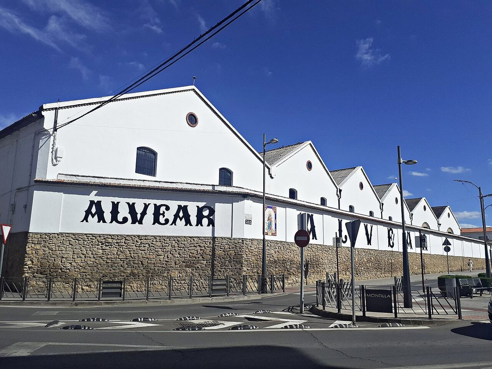

WHITE
Montilla winery founded in 1729, one of Spain's oldest, specialising in Montilla-Moriles D.O. wines made from Pedro Ximénez, from finos to sweet solera wines.

Alvear was founded in 1729 in Montilla (Córdoba) by Diego de Alvear y Escalera, and is considered one of the oldest wineries still active in Spain. The house has remained in the hands of the Alvear family over the centuries, and its bodegas occupy a large complex in the town centre.
Unlike Jerez, where Palomino dominates, the main variety in Montilla-Moriles is Pedro Ximénez. The warm, continental climate of southern Córdoba allows the grape to reach great ripeness, so the area's finos reach their strength naturally and generally need no fortification with alcohol. The most prized soils are the chalky albarizas of the Sierra de Montilla and Moriles Altos.
Alvear makes the full range of the designation's styles. Its finos, such as Fino C.B., are aged under flor in the criaderas and solera system. It also produces amontillados, olorosos and, above all, sweet Pedro Ximénez wines made from sun-dried grapes, notably the Solera 1927, alongside vintage PX and wines from very old soleras.